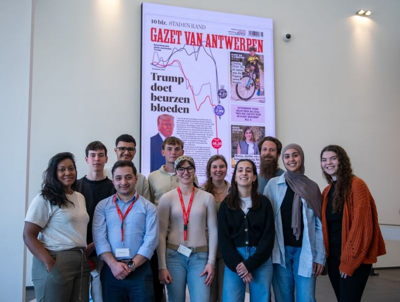
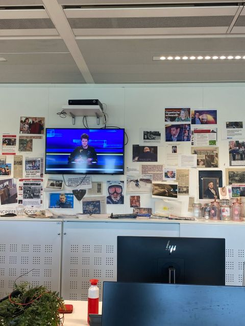
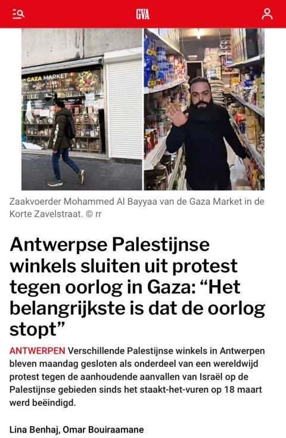
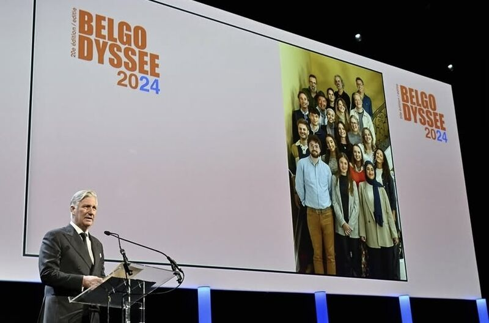

Lina Benhaj
NL
EN
FR
Li
na
Benhaj
LinkedIn
GitHub
NL —
FR —
EN —
9+
5+
4
2
Backend / .NET
C# / .NET 9
85%
ASP.NET Core MVC
82%
Entity Framework Core
80%
Angular
65%
Oracle SQL / SQL Server
75%
Visual Studio 2022
Git / GitHub
REST API
JWT Auth
MVVM
MVC
.NET MAUI (Android)
80%
Java / Spring Boot
72%
PHP / Laravel
70%
HTML / CSS / Bootstrap / Tailwind
85%
JavaScript / Thymeleaf / Blade
65%
Spring Boot
Laravel/Blade
Thymeleaf
Tailwind CSS
MVVM
SQLite / MySQL
RabbitMQ
AJAX
90%
85%
Storytelling
90%
AutoCAD
55%
Excel / Outlook
80%
Video Editing
Interviewing
News Writing
Social Media
AutoCAD
Agile / Scrum
Rally (Agile Central)
Sprint Planning
Stand-ups
Visual Studio 2022
IntelliJ IDEA
VS Code
Git / GitHub
Maven
Composer
Vite / npm
Oracle SQL Developer
SQL Server
MySQL
Entity Framework
SQLite
H2 (in-memory)
CSRF Beveiliging
JWT / OAuth
ASP.NET Identity
Soft Delete
i18n (.resx)
AutoCAD
Outlook / Excel
Microsoft Office
95%
92%
90%
90%
90%
88%
85%
85%
82%
80%
01
AXA Belgium · Brussels, Hybrid
Feb 2026 – May 2026
Internship
Agile/Scrum
Rally
B2B Platform
Software Dev
02
nooby.tech · Brussels
Oct 2025 –
Part-time
Robotics
VEX
Coaching
03
Proximus Group · Brussels
Jul 2025
Seasonal
AutoCAD
Excel
04
Gazet van Antwerpen
Apr 2025
Journalism
Newsroom
Reporting
05
CoderDojo Belgium · Brussels
Feb – Apr 2025
Volunteer
Mentoring
Programming
06
StampMedia · Flanders
Nov 2021 – Dec 2024
3+ years
Video
Journalism
Storytelling
07
King Baudouin Foundation · Belgodyssee
Oct – Dec 2024
Competition
VRT
RTBF
KNACK
L'Avenir
Multimedia
08
1001 Schakels · Vilvoorde
Sep 2024 – Mar 2025
Volunteer
Video
Social Media
Presentatie
Humanitair
09
The Redhorse Collective
Apr – Jun 2024
Internship
Video Editing
Instagram
Human Rights
Multimedia
10
21bis · Mechelen
2023 – 2024
Apprenticeship
On-air Reporting
Editing
Multimedia
FitnessClub Applicatie
ASP.NET Core MVC
.NET MAUI
REST API + JWT
Entity Framework
GitHub
Through Words and Water
YouTube
01
Erasmushogeschool Brussel
2024 – 2026
C# / .NET · ASP.NET Core · Entity Framework
Oracle SQL · Angular · REST API · JWT
Business IT · Project Management · Documentation
Agile/Scrum · Software Architecture
02
Thomas More — Mechelen
2021 – 2024
Media Storytelling · Onderzoeksjournalistiek
Videoproductie · Beeldbewerking
Internationale & Binnenlandse Politiek
Nieuwsanker · Reportages · Interview
03
Danmarks Medie- og Journalisthøjskole
5 maanden · 2023 · Aarhus, Denmark
International Video Journalism
2 reportages (Denemarken) + 1 documentaire (Roemenië)
Multidisciplinaire internationale teams
04
ISCPA — Institut Supérieur des Médias
Erasmus+ · 2024 · Parijs, Frankrijk
Interviews topsporters (Olympische Spelen Parijs)
Multidisciplinaire internationale teams
Multimedia Storytelling · Live Reporting
Belgodyssee · 20e editie · Finalist · King Baudouin Foundation · Dec 2024
2024
TOP Scorer — tech_student_challenge_2026
Proximus Group · EditX · Mar 2026
2026

gazet-groep.jpg

gazet-redactie.jpg
gazet-artikel1.jpg

gazet-artikel2.jpg

belgodyssee-koning.jpg
"
S
Soukaina M.
Software Engineer @ AXA Belgium
"
A
Anouk Torbeyns
Hoofdredacteur StampMedia
Email
Benhaj.L@outlook.com
LinkedIn
lina-benhaj
GitHub
Linabenhaj
Brussels, Belgium